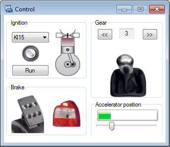
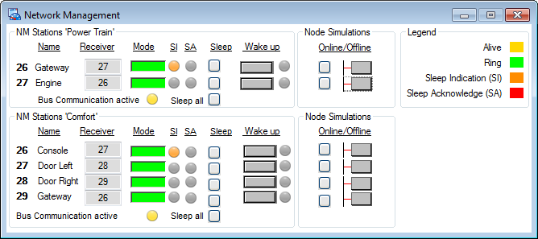
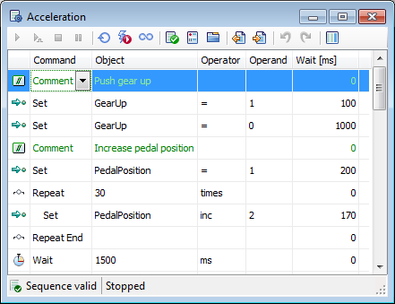

CANoe
CANoe|
|
This page describes several sample configurations. Click on the blue link to load the sample configuration in CANoe.
|

The System Configuration (CAN) sample configuration demonstrates the simulation of two CAN networks (PowerTrain and Comfort) in a vehicle. Furthermore, it introduces the basic and current CANoe functions.
The System Configuration (CAN) High Resolution AUTOSAR sample configuration is almost identical with the System Configuration (CAN) sample configuration described below. However, the AUTOSAR variant uses AUTOSAR network management while System Configuration (CAN) sample configuration uses OSEK network management. Please refer to the Network Management panel on the NM desktop.
Introduction (automatically)
A sequence is automatically started when the measurement is started. The DrivingCycle sequence simulates several phases including start ignition and engine, acceleration and slow down.
Further macros/sequences are available. You can configure them on the Simulation ribbon tab|Automation or via the Automation Sequences toolbar.
The Motor Start sequence starts the ignition. A running engine is displayed in the Control panel on the Power Train desktop.
The Acceleration sequence simulates vehicle acceleration; the Park sequence simulates driving performance while parking.
If you would like to start the simulation manually (panel operation), deaktivate the sequence/macro replay in the Automation Sequences dialog when starting the measurement.
Functional Overview
On the Functional Overview page you find an overview with short descriptions of the functions demonstrated in this sample configuration. Each short description contains also a link for detailed information about the corresponding function.
|
|
Note The baudrate in the sample configuration is set to 500kBaud. You can change the baudrate for each channel via the Hardware ribbon tab|Network Hardware under Setup. |
Desktops
This configuration contains the following desktops:
|
|
PowerTrain [▲ back]
Bus traffic is displayed on the Power Train desktop using the Graphics Window, the Trace Window and panels.
- You can manipulate the simulation using the Control panel.
- The Dashboard panel is for display.
- The CarSpeed, Gear and EngSpeed signal charts are displayed in the Graphics Window Graphics. Discrete values are defined in the database for the Gear signal, which are displayed on the y-axis.
- The Trace Window Trace PowerTrain records the Power Train bus bus traffic.
Introduction (manually)
Start the measurement (switch off the running sequence beforehand, see above).
Start the simulation in the PowerTrain desktop in the Control panel in the Ignition area via right click on the image of the ignition lock. A right click turns the lock to the right, a left click to the left. The value displayed in the list above changes accordingly. If the value is set to KL15, the indicator light illuminates in the Dashboard. After that click the Run button in the Ignition area to start the engine in the simulation.
After the start, simulation model messages with cyclical transmission properties will be sent to the bus in the corresponding intervals. These messages are shown in the Trace Window.
Macro/Sequence Recorder
You can now start additional macros/sequences. Information is available above.
Manipulate the Simulation Model
|
Various signal values in the simulation can be influenced via the Control panel. Operations include:
|
 |
If you change signal values in the Control panel, you will see the modified values in the corresponding message in the Trace Window. Open the message to see the signal values. The current signal values of above listed signals are also displayed in the Graphics Window.
If you accelerate or brake, you see the changed EngSpeed signal value in the Trace Window or the Graphics Window. You can also observe the tachometer and speedometer on the Dashboard panel.
If you change the radio station, operate the blinker, hazards or head lights, the current status of the signals is indicated on the Dashboard panel.
Comfort [▲ back]
On the Comfort desktop, you see the Console and Windows Position panels.
Console
You can execute the following actions on the Console panel:
- Change the radio station (Station transmission via TP)
- Turn head lights on and off (Head Lights)
- Turn hazard lights on and off (Hazards)
- Switch indicator on and off (Turn Signal)
Windows Position
Via the Windows Position panel the position of the right and left door window can be modified.
Panel elements are mapped directly to signals. If you change signal values on the panel, this information must be transferred. The changed panel element value is forwarded to the CANoe Interaction Layer, which is responsible for the transmission.
The Transport Protocol (TP) according to ISO/DIS 15765-2 is used to transmit the radio station information.
Trace Comfort
The Trace Window Trace Comfort displays the Comfort Bus bus traffic.
Analysis [▲ back]
Some of the CANoe analysis windows are displayed on the Analysis desktop: Graphics Window, Data Window, State Tracker and Trace Window.
Any signal can be inserted and configured in the Data Window, the State Tracker and Graphics Window. The Data Window shows the current signal value as numeric value and on a progress bar. The State Tracker is used to analyze states and state transitions. The Graphics Window illustrates signal charts.
The Trace Window displays all bus traffic. Open a message or its detail view to evaluate the message.
Measurement Setup [▲ back]
On the Measurement Setup desktop you can see the Measurement Setup. The analysis area is displayed here. You can insert filters (Channel Filter, Frame Filter, etc.) or program nodes on the left of the individual analysis windows for a detailed analysis.
Simulation Setup [▲ back]
The complete system including buses and all network nodes are illustrated graphically in the Simulation Setup.
In the Simulation Setup it must be defined whether the network nodes are real or simulated. The behavior of simulated network nodes is implemented using modeling libraries (DLLs) and CAPL programs.
The Power Train and Comfort buses are linked together via Gateway for information exchange.
Test Setup [▲ back]
If you would like to use CANoe as a framework for tests, the Test Setup and various test modules are available.
An XML test module (Engine Tester) and a CAPL test module (Engine Tester), which are included in the Test Setup, are introduced in this sample configuration.
The cycle time of the EngineData message and the signal values of the message are checked for validity in the Engine Tester. In the Execution Dialog of the XML test module Engine Tester the test cases are displayed. Select the Start button to start the test. If a test case passes without any errors, the verdict is green (passed); if not the verdict is red (failed).
You can view the test module report by selecting the Test Report button.
The cycle times of various engine messages are checked-in the CAPL test module Engine Tester. Start the test via the Start button.
In the Execution Dialog of the test modules the notifications of the current test module are displayed in the Test Observer page. This will give you an overview of the current test execution.
Diagnostics [▲ back]
For the Engine ECU, Diagnostic functions according to KWP2000 are demonstrated in this sample configuration.
On the Diagnostics desktop you will find the Diagnostic Window with the Diagnostic Feature Diagnostic Console and the Fault Memory Window for the Engine ECU. In addition, a Trace Window is opened, which displays the diagnostic activities on the bus.
The diagnostic information is transmitted via the linked ISO/DIS 15765-2 Transport Protocol. The diagnostic information is interpreted according to the assigned diagnostic description file (CDD file created with CANdela).
Diagnostic Window / Diagnostic Console
To start a diagnostic session, select the diagnostic request 1081 Default Session (OBDII) Start in the column ECU / Service / Diagnostic Class / Parameter of the Diagnostic Console.
If parameters for the request can be changed, you can expand the area below the respective request further to see and change the parameters of the diagnostic request. In this case there are no parameters.
To send the selected diagnostic request, click on the button (Send Diagnostic Request once only).
The diagnostic response is displayed in the Diagnostic Trace. If the diagnostic request is answered by a Positive Response, the diagnostic session started successfully.
Fault Memory Window
To read out the fault memory, select the diagnostic request 18 02 - Fault Memory Read (all identified) in the tree view of the Engine - Diagnostic Console under Fault Memory and click the Execute button.
If executed correctly a Positive Response follows.
Press the Update Fault Memory List button in the Fault Memory Window to display the fault memory output.
Macro/Sequence Recorder (Macro Diagnostics)
A Diagnostics macro is available, which can be started via the Simulation ribbon tab|Automation or via the Automation Sequences toolbar. Please note before starting the engine that you can use the Motor Start sequence for this purpose.
The Diagnostic macro executes engine ECU diagnostic operations. Observe the engine - diagnostic console and the Trace Window.
NM [▲ back]
The state of the Comfort and PowerTrain networks is controlled by the OSEK Network Management.
Therefor, NM messages are sent by a dedicated DLL. Furthermore, the bus status can be controlled by special interface functions in CAPL. The entire network can be transferred or reawakened while in bus sleep mode.
In the Trace Window Trace NM, the NM messages are displayed. They are all named NM_node .
The Network Management panel displays the current status of the networks for the Power Train and Comfort buses simultaneously. This panel displays the network management information of all nodes associated with the network management.
Each node has a permanent NM address (column 1). Once the simulation is started (see PowerTrain desktop), the NM ring is created and each node is assigned a receiver address (Receiver).
In the Mode field the current node status (awake - Alive, NM ring initialization - Ring, Sleep Indication (SI), Sleep Acknowledge (SA)) is displayed.
In the Mode field the current node state is displayed by the corresponding color:
- Alive (yellow - initialization of the NM ring)
- Ring (green - normal mode)
- Sleep Indication (SI) (orange - change to sleep mode)
- Sleep Acknowledge (SA) (red - confirmation of sleep mode)
You can reawaken a node with the sleep indication NM property with the Wake up function. You can also wake-up, for example, the door left node by adjusting the window in the left door in the Window Position panel on the Comfort desktop.

If you set a node Offline by operating the appropriate button in the Node Simulations area, the NM ring is reinitialized without this node and the receiver addresses are reassigned.
Once all nodes of a bus have status NM Sleep Indication, the node that set to Sleep Indication first, will switch to Sleep Acknowledge. The bus is now in bus sleep mode.Bus Statistics [▲ back]
On the Bus Statistics desktop bus statistic data are displayed in the CAN Statistics Windows CAN 1 Statistics and CAN 2 Statistics as well as in the Graphics Windows Bus Statistic Graphics.
The CAN Statistics Window displays bus characteristics such as peak load, busload, sent messages, sent Error Frames, etc.
Bus statistics can also be displayed in the Graphics Window. In this example busload and messages per second are displayed for both buses, PowerTrain (CAN1) and Comfort (CAN2).
Signal Generator [▲ back]
Signals and system variables can be linked with Signal Generators. The signals are sent with help of the used Interaction Layer DLL. You can test e.g. the response of a control device with the help of a Signal Generator.
Following generator types are available:
- Sine
- Ramps and pulses
- Value range
- Toggle switch
- Random
- User-defined
The Signal Generator desktop shows system variable curves stimulated with Signal Generators.
The Signal Generators can be controlled via the Simulation Ribbon Tab and the Signal Generators button.
OBD-II Tester [▲ back]
With the OBD-II Tester it is possible to query emissions relevant data from the ECUs in a CAN network – as in this case the Powertrain network – based on OBD diagnostics.
Therefor you have to configure the OBD-II functionality first. Please run through the steps listed on the OBD2Info panel.
After a network scan using an OBD-enabled ECU is found (ECU Engine Control). You can then activate a cyclic query, and thus monitor the progression of values, by pressing on the Live Data Grid screen.
Visual Sequencer [▲ back]
The Visual Sequencer desktop includes several visual sequences (also refer to Visual Sequencer) that provide an easy way of controlling the simulation. The sequences are configured in debug mode. Therefor, the sequence cursor marks the command that is currently being executed. In the Control panel or the Graphics Window you can observe the effect the commands have.
Note Before executing a sequence you should stop the DrivingCycle macro that starts automatically at the start of measurement. An overview of macros and sequences is shown in the Automation Sequences dialog using the the Simulation ribbon tab|Automation. |
Sequence: Motor Start
Motor Start emulates a start process. The system variables for the ignition key and the starter are modified at predefined intervals (Wait column).
Sequence: Acceleration

This sequence emulates an acceleration process in which the gear is shifted up and the position of the accelerator is changed in small steps (loop with Repeat and Repeat End commands).
Sequence: Park
The Park sequence brakes the virtual vehicle, shifts to neutral and turns the motor off.
PDU Interactive Generator [▲ back]
The desktop PDU Interactive Generator (PDU IG) displays the window of the same name with a configured PDU. The PDU IG replaces the CAPL node DOOR_le (left in the Simulation Setup) by sending the PDU DOOR_l cyclically. The system variable ::ComfortBus::DashboardWNLStateDisplay is used as trigger for updating the signal values of the signal WN_Position_l of the PDU.
To use the PDU Interactive Generator instead of the CAPL node, you must do the following:
- First deactivate the CAPL node DOOR_le in the upper left corner of the Simulation Setup (desktop Simulation Setup).
- Then activate the CAPL node of the same name in the top right-hand corner of the Simulation Setup. This node references the send node DOOR_le from the ARXML database Comfort and is required for sending the PDU.
- Then switch to the desktop PDU Interactive Generator and click on the Activate button in the upper left corner of the PDU IG window.
- Then start the measurement.
- On the Panel Window Position, the side window of the virtual vehicle should rise and fall.